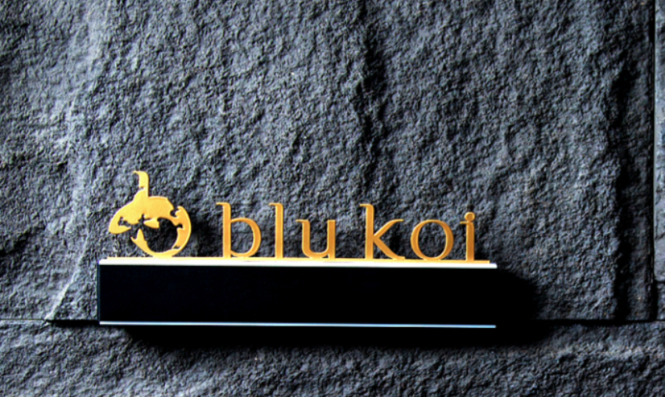
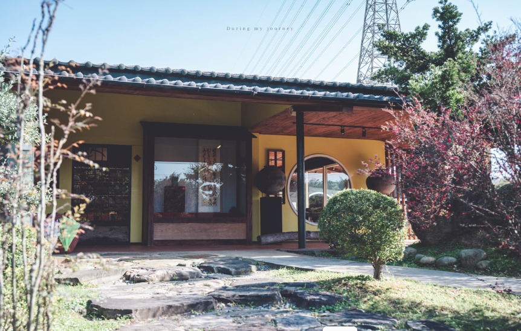
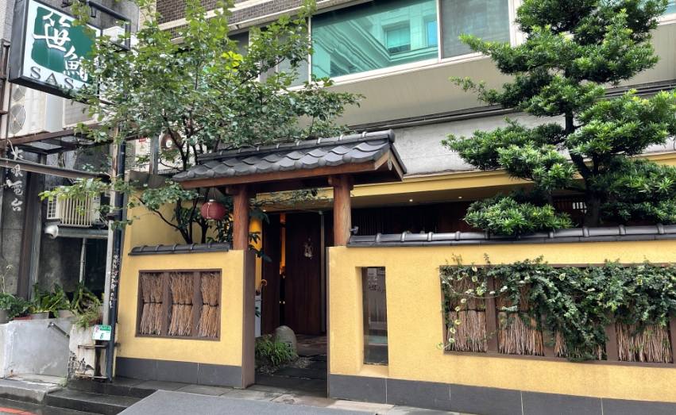

|
blu koi
 |
關於 blu koi
頂級日式料理餐廳 blu koi，專注於「Omakase 無菜單壽司割烹」， 以精選時令食材與純粹職人技藝，為饕客帶來極致的味覺饗宴。 我們遵循四季更迭的自然律動，精心挑選春夏秋冬最合時宜的海鮮與食材， 透過細膩的料理手法，展現日本料理的純粹之美。 |
|
樹園子
 |
樹園子是位於桃園觀音區的隱密日式禪風庭園餐廳， 主打以精緻、注重當季食材的無菜單懷石料理。 該處前身為私人招待所，環境幽靜，充滿珍貴樹木與日式造景等。 |
|
笹鮨 SASA
 |
台北中山區的「笹鮨SASA」是一間以正統江戶前風格為主的知名無菜單（Omakase）日本料理， 曾獲米其林指南入選推薦。主要特色為嚴選日本直送海鮮，由經驗豐富的師傅精心製作握壽司， 以食材的細膩熟成處理聞名，是精緻板前壽司的高品質代表。 |